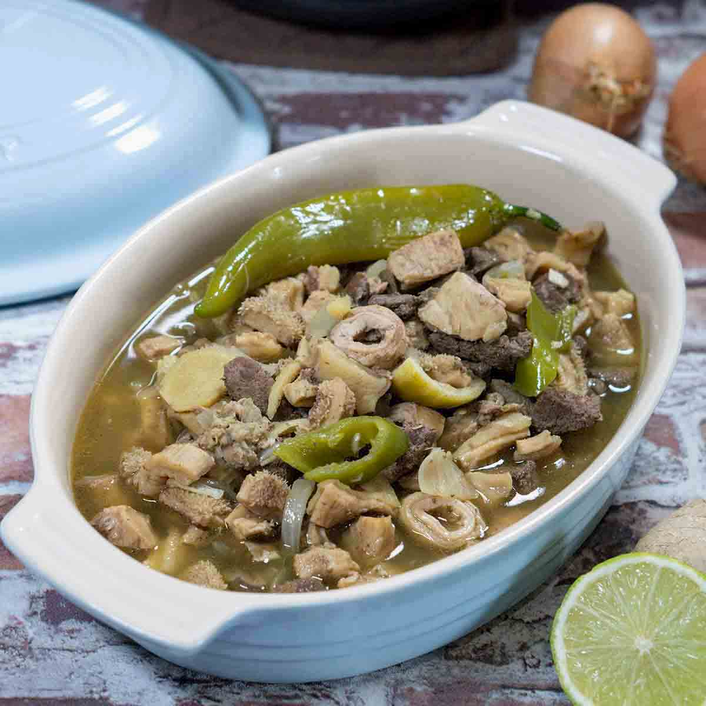

Papaitan Recipe

Beef Papaitan or Papaitang Baka is a version of the popular Pinapaitan that makes use of the cow’s internal
organs. This is my own take to this beloved dish. I made sure to make the process as simple as possible so that
you can follow.
Ingredients
- 500 g beef heart cubed
- 500 g beef small intestines cleaned
- 500 g beef tripe cleaned
- 250 g beef liver cubed
- 500 g beef kidney cubed
- 25 g Knorr Sinigang sa Sampalok mix
- 1 piece onion chopped
- 3 thumbs ginger minced
- 5 cloves garlic crushed
- 3 pieces long green pepper sliced
- 1.8 L water
- beef bile to taste
- Salt and pepper to taste
- 3 tablespoons cooking oil
Instructions
- Wash beef tripe and small intestine. Boil with ginger and dried bay leaves for 45 minutes. Remove from the
pot and let it cool down. Slice into bite-size pieces.
- Heat oil in a pan. Sauté onion, garlic, and ginger until onion softens.
- Add beef heart and kidney. Sauté until it turns light brown.
- Put the tripe and small intestines into the pot. Cook for 2 minutes.
- Pour water into the pot. Let it boil. Adjust heat to low. Continue boiling until beef heart and kidney
tenderizes.
- Add beef liver and bile. Stir. Cook for 15 minutes in medium heat.
- Add Knorr Sinigang sa Sampaloc Recipe Mix.
- Put long green peppers into the pot and season with salt and ground black pepper. Stir. Cook for 2 minutes.
- Transfer to a serving bowl. Serve hot.